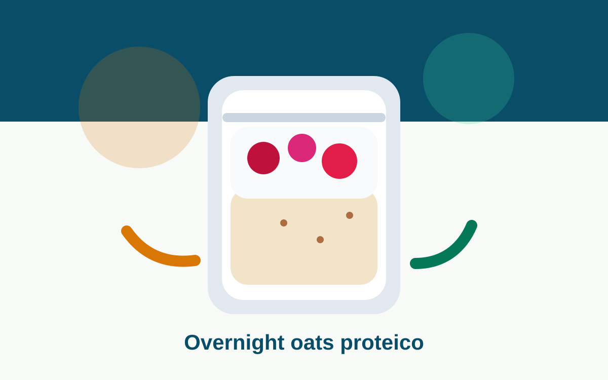
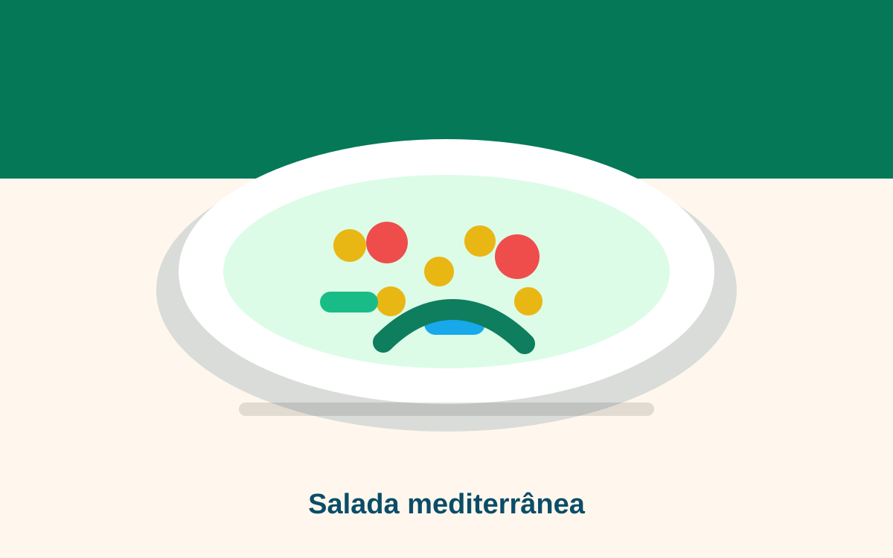
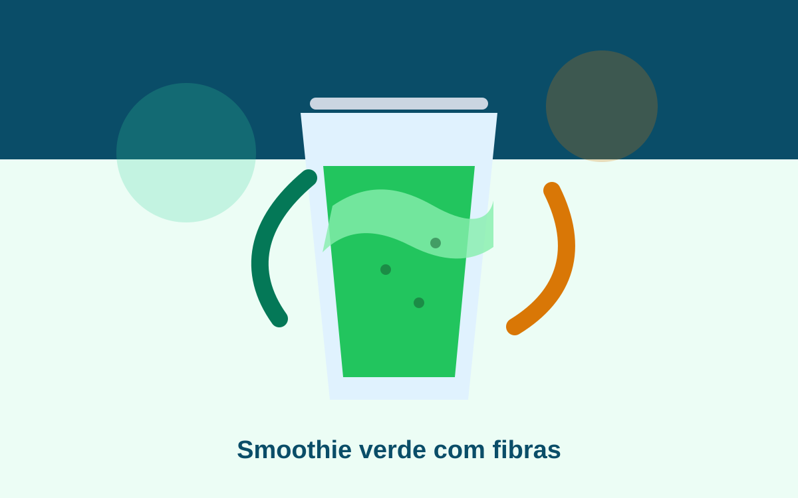

Resistência à Insulina: Mecanismos
Uma revisão detalhada sobre a fisiopatologia da resistência insulínica e estratégias não-farmacológicas.
Leia artigos claros, teste ferramentas gratuitas e descubra receitas saudáveis para cuidar do corpo com mais consciência no dia a dia.
Protocolos de cálculo baseados em evidências para avaliação rápida.
Converta valores de glicemia com precisão (fator 18.0182), com tabela de referência e indicação de faixa.
Abrir ferramentaNavegue pelos temas de saúde que mais importam pra você.
Conteúdos publicados recentemente no site.
Análises profundas sobre as categorias prioritárias de saúde.
Uma revisão detalhada sobre a fisiopatologia da resistência insulínica e estratégias não-farmacológicas.
Entendendo o metabolismo de proteínas, carboidratos e lipídios em nível celular.
Atualizações sobre diagnóstico, monitoramento e controle da pressão arterial sistêmica.
Impactos neurobiológicos do estresse prolongado e marcadores hormonais de saúde mental.
Como a luz e os ciclos de sono afetam seu metabolismo, hormônios e sistema imunológico.
O papel do músculo esquelético como órgão endócrino e seus benefícios sistêmicos.
Compromisso com a ciência e a verdade.
Todo nosso conteúdo é fundamentado em diretrizes oficiais (OMS, CDC) e estudos revisados por pares em bases como PubMed e SciELO.
Conferimos fontes, datas, clareza e avisos de segurança antes de manter um conteúdo publicado.
Nossa missão é traduzir a complexidade da medicina para uma linguagem clara e acessível, sem perder a profundidade técnica.
Uma nova área para atrair buscas orgânicas de alimentação, café da manhã, marmitas e lanches práticos, sempre conectando preparo simples com explicação nutricional.

Aveia, iogurte, chia e frutas em uma opção prática para saciedade logo cedo.

Refeição fria, rica em fibras e proteína vegetal, boa para marmita saudável.

Fruta, folhas, chia e aveia em uma bebida simples para variar os lanches.
Quizzes educativos baseados nos nossos artigos mais recentes.
Você sabe diferenciar fato de ficção quando o assunto é insulina e gasto calórico?
Iniciar QuizTeste seu entendimento sobre pressão arterial e os fatores de risco invisíveis.
Iniciar QuizDescubra se seus hábitos noturnos estão ajudando ou prejudicando seu ritmo biológico.
Iniciar QuizNavegue por temas de saúde que mais interessam nossos leitores.
Utilitários gratuitos para o seu dia a dia, sem cadastro necessário.
Crie QR Codes personalizados para links, textos e mais.
Reduza o tamanho de imagens sem perder qualidade.
Gere senhas fortes e seguras instantaneamente.
Converta medidas de peso, comprimento, temperatura e mais.
Descubra seu endereço IP público de forma rápida.
O Calcule Sua Saúde nasceu com a missão de democratizar o acesso à informação de saúde baseada em evidências. Acreditamos que conhecimento de qualidade pode transformar vidas e promover decisões mais conscientes.
Nosso processo editorial prioriza diretrizes da OMS, CDC e sociedades reconhecidas, além de estudos localizados em bases como PubMed e SciELO.
Mais de 40 artigos de saúde, 13 calculadoras, receitas saudáveis e 10 quizzes — tudo gratuito e com fontes identificadas.
Fale ConoscoTudo o que você precisa saber sobre o Calcule Sua Saúde.
Sim. Todas as nossas calculadoras utilizam fórmulas reconhecidas internacionalmente, como as equações de Harris-Benedict, Mifflin-St Jeor e os critérios da OMS. No entanto, os resultados são educativos e não substituem uma avaliação médica profissional.
Sim. Todo o conteúdo é fundamentado em diretrizes oficiais (OMS, CDC) e estudos revisados por pares em bases como PubMed e SciELO. Seguimos protocolos editoriais rigorosos para garantir precisão e atualização constante.
Não. Todas as calculadoras de saúde, artigos científicos e quizzes educativos são 100% gratuitos. Nossa missão é democratizar o acesso à informação de saúde baseada em evidências.
Não. As informações e resultados fornecidos são estritamente educativos e informativos. Sempre consulte um profissional de saúde qualificado para diagnósticos, tratamentos ou orientações médicas personalizadas.
Sim. O Calcule Sua Saúde está disponível em Português (BR), Inglês e Espanhol. Você pode alternar entre os idiomas no seletor localizado no topo da página.